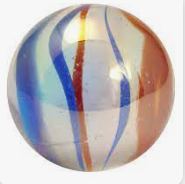
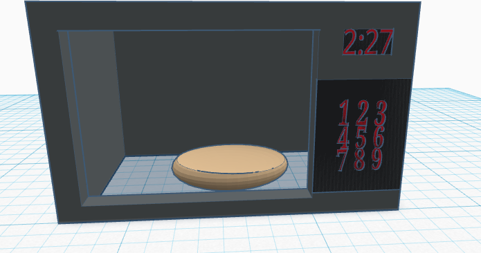
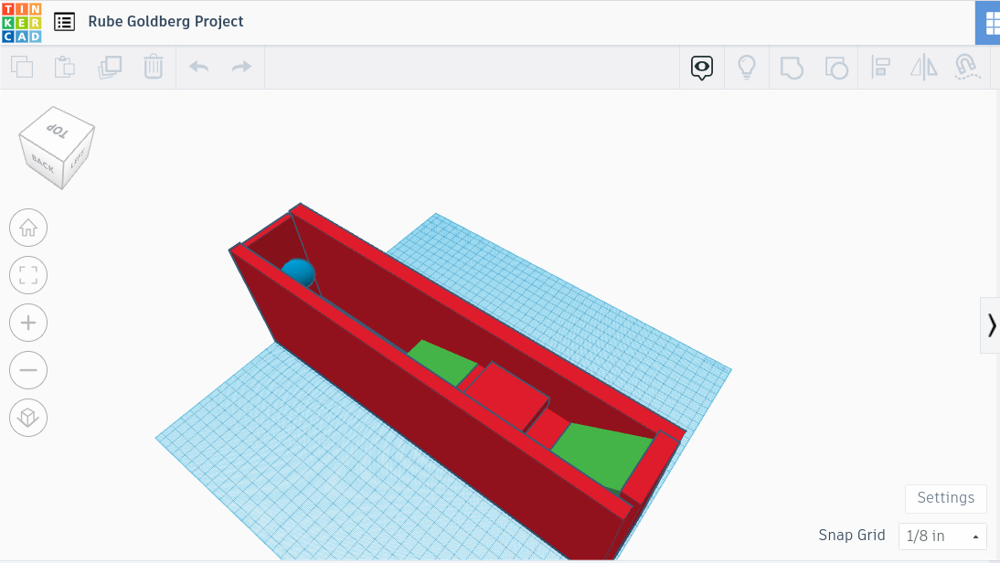
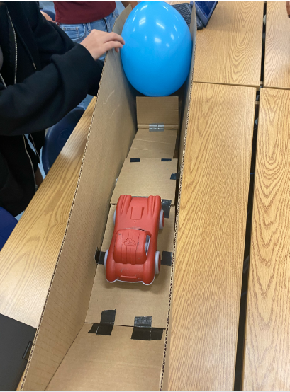
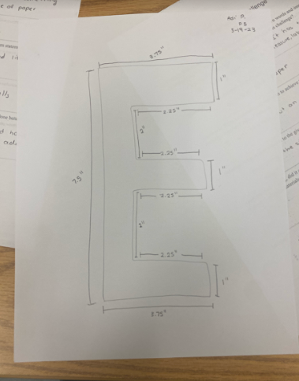

8/21/23-8/24/23 Week 1
This week I learned how to use what I learned in Physics last year about momentum and speed and apply it to a challenge.
Our challenge was to make a marble travel as long as we can make it travel for by using sticks and by not allowing for it
to move backwards, stop, or be touched by anyone's hands. We eventually got close enough to the bucket and the marble
almost went in. I also learned how to code a bit because we had to make our own websites and code it to look the way we
want it to. I learned various controls in order to add a header, add a indent in a paragraph, etc. I had a lot of fun this
week especially since I like the hands on work.

8/28/23-9/1/23 Week 2
This week I learned how to use the website TinkerCad. It is a website that lets us design and computer generate our plans
for whatever project we are doing. For our challenege today, we had to create a home appliance using the shapes and controls.
So I had to flatten out shapes, add text, rotate the shapes, and manuever the things in general so I could create the buttons
on a microwave. I had a lot of fun using TinkerCad since it lets me be creative and I feel smart CAD'ing.

9/5/23-9/8/23 Week 3
This week my team and I designed our first engineering project on TinkerCad. We had to make it to scale and that was when we
realized our project will end up being pretty big. My team and I also started constructing our project that we hope will pop
a ballon as the end goal. We made measurmentsm using a ruler before cutting the cardboard pieces out so we knew we were making
the most of our materials. I had a lot of fun becasue I like the hands on work in this class and the collaborativeness it promotes.

9/11/23-9/15/23 Week 4
This was the week we tested our Rube Goldberg design project. We are pretty excited because it worked and the car did fall into
the see-saw pushing the needle up and popping the balloon. At first, our project did not pop the balloon because our needle was
too far and back and the ballon was not blown up enough. The construction of our project was also fun because we had to cut out
all the pieces from cardboard and use duct tape to put them together. I had a good time working with my team and we were all
very cooperative.

9/18/23-9/22/23 Week 5
I learned about Electrical Engineering in class today and I am actually interested it. With the coding we have done in class with
our websites I feel more comfortable with it everyay and I enjoy it. On Tuesday we also did some challenges, a flotation device
challenege and then a designing challenege. I made my boat with a base and rafters on the bottom and it actually floated
for the full 5 minutes. We also designed the letter E to ensure we could give correct and accurate measurements.
